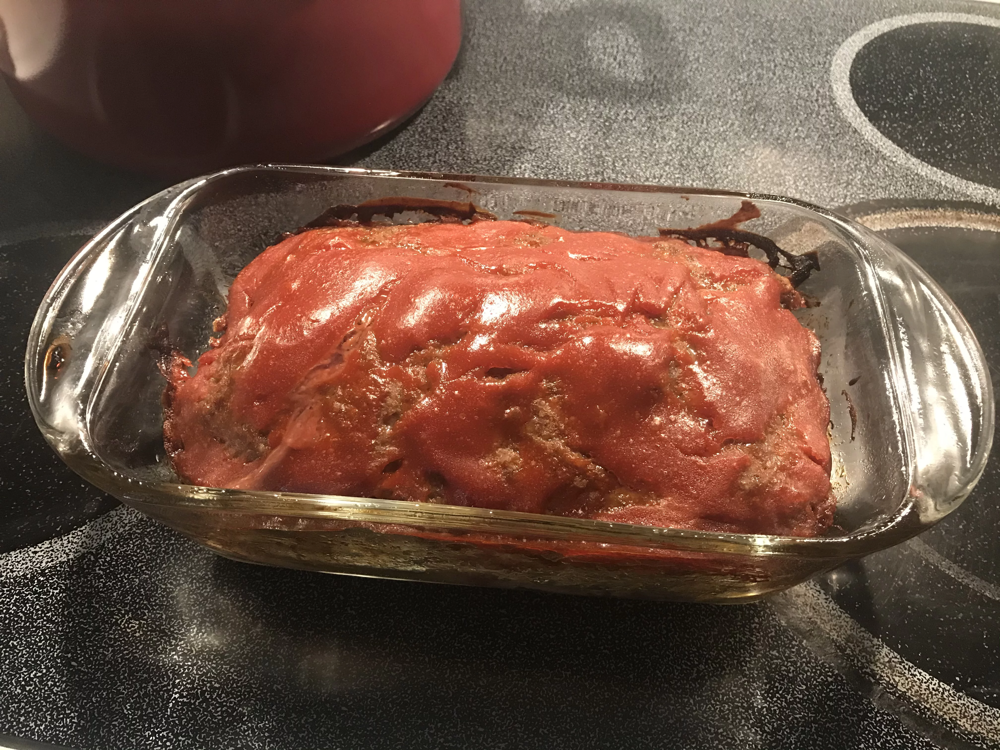

Meatloaf Recipe

Description
Ingredients
- cooking spray
- 1 ½ pounds ground beef
- 1 small onion, chopped
- ¾ cup chicken-flavored bread stuffing mix (such as Kraft® Stove Top®)
- 1 egg
- 1 cup shredded mozzarella cheese, or to taste
Steps
- Preheat oven to 375 degrees F (190 degrees C). Grease one 9x5-inch loaf pan with cooking spray.
- Mix beef, onion, stuffing mix, and egg by hand in a bowl. Press beef mixture into prepared pan.
- Bake in the preheated oven until no longer pink in the center, 35 to 40 minutes. An instant-read thermometer inserted into the center should read at least 160 degrees F (70 degrees C).
- Top meatloaf with shredded mozzarella cheese and let rest while cheese melts, about 10 minutes.
Return to recipes list